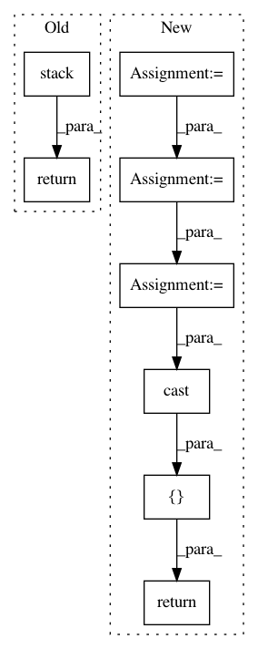

58ace0a10f2859a7bfbb9b56238ba47e4175f5ac,onnx_tf/handlers/backend/min.py,Min,_common,#Any#Any#,17
Before Change
@classmethod
def _common(cls, node, **kwargs):
values = [kwargs["tensor_dict"][inp] for inp in node.inputs]
return [
cls.make_tensor_from_onnx_node(
node, inputs=[tf.stack(values)], **kwargs)
]
@classmethod
def version_1(cls, node, **kwargs):
return cls._common(node, **kwargs)
After Change
values = [kwargs["tensor_dict"][inp] for inp in node.inputs]
dtype = values[0].dtype
if dtype in cls.cast_map:
values = [tf.cast(v, cls.cast_map[dtype]) for v in values]
result = values[0]
for i in range(1, len(values)):
result = tf.minimum(result, values[i])
return [tf.cast(result, dtype) if dtype in cls.cast_map else result]
@classmethod
def version_1(cls, node, **kwargs):
return cls._common(node, **kwargs)
In pattern: SUPERPATTERN
Frequency: 3
Non-data size: 8
Instances
Project Name: onnx/onnx-tensorflow
Commit Name: 58ace0a10f2859a7bfbb9b56238ba47e4175f5ac
Time: 2020-10-09
Author: wtsang@us.ibm.com
File Name: onnx_tf/handlers/backend/min.py
Class Name: Min
Method Name: _common
Project Name: onnx/onnx-tensorflow
Commit Name: 58ace0a10f2859a7bfbb9b56238ba47e4175f5ac
Time: 2020-10-09
Author: wtsang@us.ibm.com
File Name: onnx_tf/handlers/backend/max.py
Class Name: Max
Method Name: _common
Project Name: tensorflow/cleverhans
Commit Name: 4887ef8baecbf5315ec0f235e56a4f93cd05aad7
Time: 2018-10-04
Author: nottombrown@gmail.com
File Name: cleverhans/attacks_tf.py
Class Name:
Method Name: spm